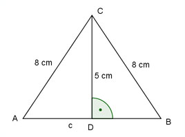

Flächenberechnungen Aufgabe 51 Ein gleichschenkliges Dreieck hat eine Höhe von 5 cm und einen Schenkel von 8 cm. Wie groß ist seine Fläche?  Satz von Pythagoras im Dreieck ADC: c a² = h² + (---)² 2 c² 8² = 5² + ---- |-5² 4 c² --- = 39 |*4 4 c² = 156 |√ c = 12,5 cm c * h 12,5 cm * 5 cm A = ------ = ----------------- = 31,3 cm² 2 2